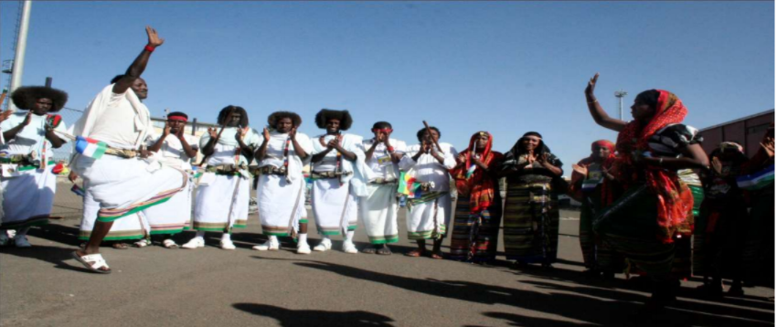
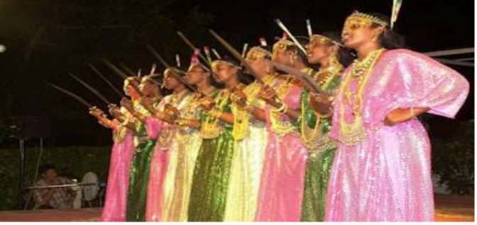
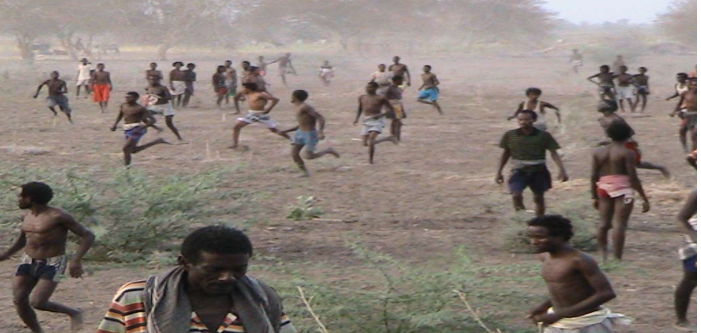

ኬኬ በመባል የሚታወቀው ጨዋታ በየትኛውም የበዓል ጊዜ የሚዘፈንና በተቀባባይ አቀንቃኝ /ዘፋኝ/ እድሜ ሳይለይ ወንዶች
ከሴቶች ጋር የሚጨፍሩበት በድምጽ በጭብጨባና በእግር ዝላይ እንቅስቃሴ የታጀበ የጨዋታ አይነት ነው፡፡

መላቦ:- Malaabo
መላቦ ጨዋታ ወንዶችን የሚያሳትፉ ሳይሆን ሴቶች ብቻቸውን በመሆን አብዛኛውን ጊዜ በሰርግና በኢድ በአል ጊዜ በተቀባባይ
አቀንቃኝ እና በሁለት ረድፍ ተሰልፈው ጊሌ /ሰይፍ / በመያዝ እንደቦታው ስፋትና ጥበት የመዞር እንቅስቃሴ እያደረጉ የሚጫወቱበት
የጨዋታ አይነት ነው፡፡

ከዚህ በላይ የተጠቀሱት አበይት የብሄረሰቡ ባህላዊ የዘፈንና የጭፍራ ዓይነቶች በመጠኑም በሆነ ለማስተዋወቅ እንጂ በእያንዳንዱ
ዘርፍ በተለያዩ መጠሪያ የሚጠቀሱ አያሌ የአጨዋወት ስልቶች መኖራቸውን ለማስገንዘብ እንወዳለን፡፡
ኮዕሶ፤ /ኳስ
ኮዕሶ፤- ከተለያዩ ጎሳዎች በተውጣጡ በሁለት ተቃራኒ ቡድኖች መካካል የሚካሄድና ጉልበትንና ትንፋሽን የሚፋታትን ሲሆን በተጨማሪም ፈጣን ሯጭ መሆን የሚፋልግ እድሜያቸው ከ 18-27 የሚገኙ ወጣት ወንዶች የሚጨወቱት የጨዋታ አይነት ነው፡፡ የጨዋታ ግዜ በበአል ቃናት፤ በስርግ፤ በመኸር ወቅት ወዘተ ነው፡፡ መጨረሻ የእለቱን ጨዋታና ውድድር በመከታተል የሀገር ሽማግሌዎች አሸናፊውን ቡድን በመለየት ውጤቱን የበስራሉ፡፡
ባህላዊ የኮዕሶ ጨዋታ
